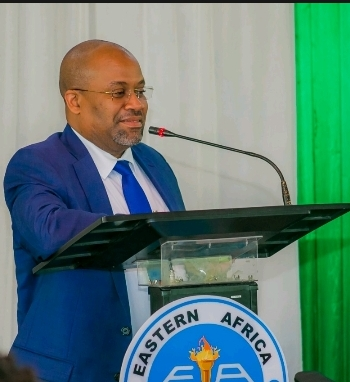

Timetable
WELCOME TO THE 7th ANNUAL GENERAL MEETING CONVOCATION OF THE EASTERN AFRICA TRAINING CENTRE WHILE THEME WILL BE "MODERNIZING DAT ECOSYSTEMS TO ACCELERATE THE IMPLEMENTATION OF AFRICA CONTINENTAL FREE TRADE AREA (AfCFTA) : THE ROLE OF OFFICAL STATISTICS AND BIG IN THE ECONOMIC TRANSFORMATION AND SUSTAUNABLE DEVELOPMENT OF AFRICA" .
About the Convocation
Welcome to the Eastern Africa Statistical Training Center's Convocation! Join us as we celebrate the achievements of our graduates.
LADIES AND GENTLEMEN
Welcome to the Seventh Graduation Ceremony of the Eastern Africa Statistical Training Centre (EASTC) in our brand-new building. Today, we honor the dedication and achievements of our graduates.
To our graduates: Your hard work has brought you to this moment. You leave EASTC equipped to make a real difference in the world.
To our faculty and staff: Your commitment to excellence has shaped the minds of our graduates and set a high standard for academic achievement.
As we celebrate, let us also look to the future with optimism. The world presents new challenges, but with education and determination, we can overcome them.
Congratulations to the graduating class of [Year]. Your success is a testament to your talent and perseverance. As you move forward, carry the values of EASTC with you and continue to make us proud.
Thank you.
Contact Us
If you have any questions about the convocation, please contact us at info@eastc.org.